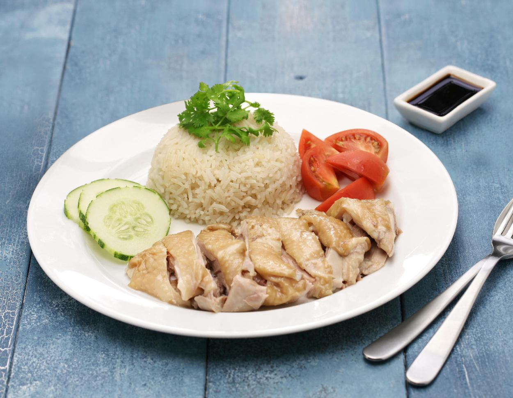

Chicken Rice

Description
Hainanese chicken rice is a dish of poached chicken and seasoned rice, served with chilli sauce and usually with cucumber garnishes. It was created by immigrants from Hainan in southern China and adapted from the Hainanese dish Wenchang chicken. It is considered one of the national dishes of Singapore and is most commonly associated with Singaporean cuisine. The dish is also seen throughout Southeast Asia, particularly Indonesia and Malaysia where it is a culinary staple.
Catherine Ling of CNN called Hainanese chicken rice one of the "40 Singapore foods we can't live without". It was listed as one of the "World's 50 best foods" by CNN in 2018. David Farley of the BBC called it "the dish worth the 15-hour flight" and said it was "deceptively simple - which is good, because on paper it sounds awfully boring." Saveur called it "one of the most beloved culinary exports of Southeast Asia."
Ingredients
- HAINANESE CHICKEN
- 3 lb whole chicken(1.3 kg), giblets removed
- ¼ cup kosher salt(60 g), divided
- 4 inch pieces fresh ginger, peeled and cut into ¼-inch (6 mm) slices
- 1 bunch fresh scallion
- 1 gal cold water(3.7 L), plus more as needed
- HAINANESE RICE
- CHILI SAUCE
- GINGER GARLIC SAUCE
- SOY DIPPING SAUCE
Steps
- To clean the chicken, rub all over with a handful of kosher salt, getting rid of any loose skin. Rinse the chicken well inside and out. Pat dry with paper towels.
- Remove any excess fat from the chicken and set aside for later.
- Season the chicken generously with salt. Stuff the chicken cavity with the ginger slices and scallions.
- Place the chicken in a large stock pot, cover with cold water by 1 inch (2 cm), and season with salt to taste.
- Bring to a boil over high heat, then immediately reduce the heat to low to maintain a simmer. Cover and cook for about 30 minutes, or until the internal temperature of the chicken reaches 165°F (75°C). Remove the pot from the heat.
- Remove the chicken from the pot, reserving the poaching liquid for later, and transfer to an ice bath for 5 minutes to stop the cooking process and to keep the chicken skin springy. Discard the ginger and green onion.
- After it’s cooled, pat the chicken dry with paper towels and rub all over with sesame oil. This will help prevent the chicken from drying out.
- In a large wok or skillet, heat ¼ cup (60 ml) of sesame oil over medium-high heat. Add 2 tablespoons of reserved chopped chicken fat, the garlic, ginger, and salt, and fry until aromatic, about 10 minutes.
- Reserve ¼ of the fried garlic mixture, then add the rice to the remaining fried garlic and stir to coat. Cook for 3 minutes.
- Transfer the rice to a rice cooker and add 2 cups (480 ml) of reserved poaching broth. Steam the rice for 60 minutes, or until tender.
- While the rice is cooking, carve the chicken for serving.
- Make the chili sauce: combine the sambal, Sriracha, sugar, garlic, ginger, lime juice, and chicken broth in a small bowl and stir to incorporate.
- Make the ginger garlic sauce: in a small bowl, combine the ginger, garlic, salt, peanut oil, and rice vinegar, and stir to incorporate.
- Make the soy sauce: in a small bowl, combine the reserved fried garlic and ginger with the oyster sauce, dark soy sauce, light soy sauce, and chicken broth, and stir to incorporate.
- Serve the sliced chicken with the rice, dipping sauces, sliced cucumbers, and fresh cilantro.